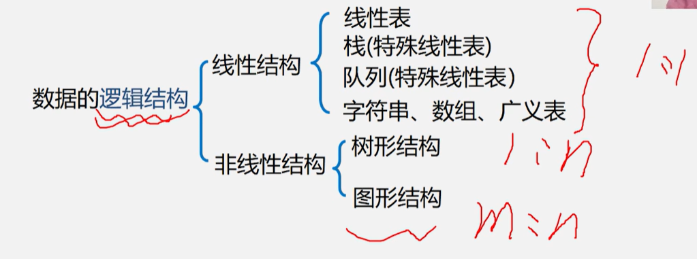
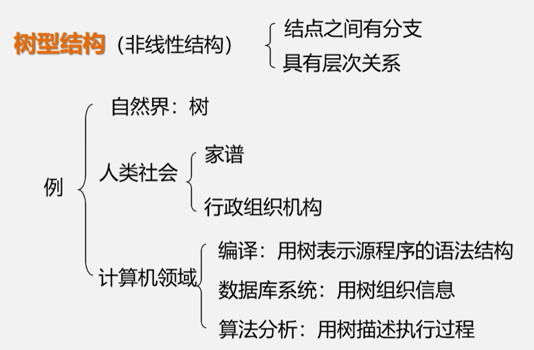
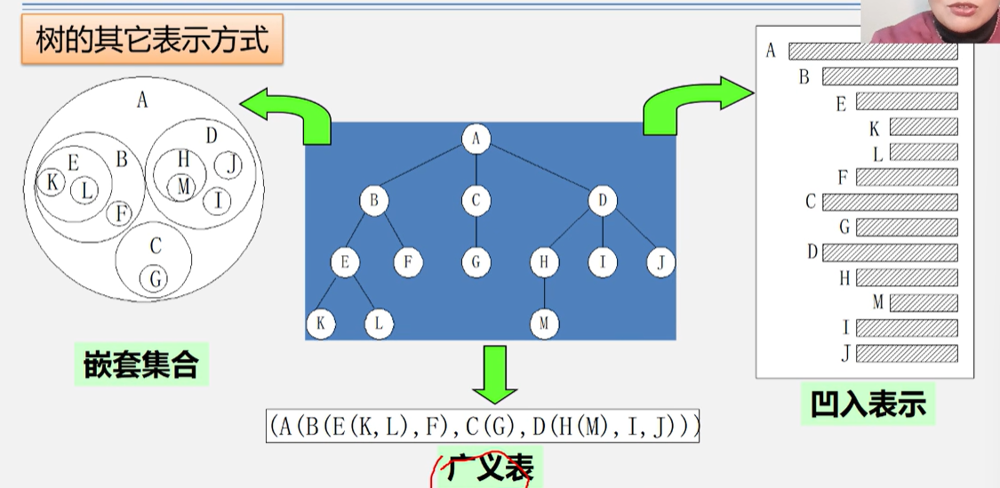
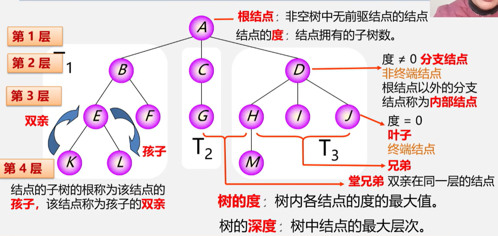
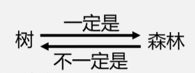
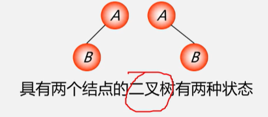
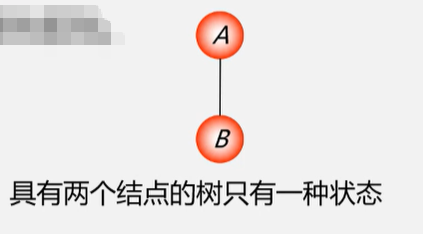
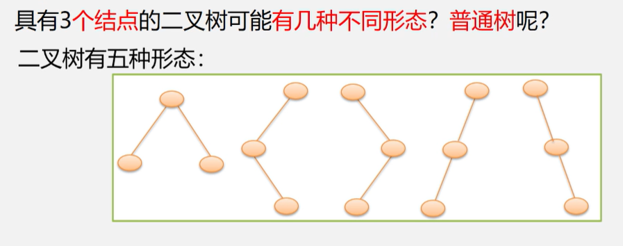
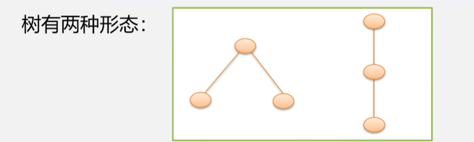
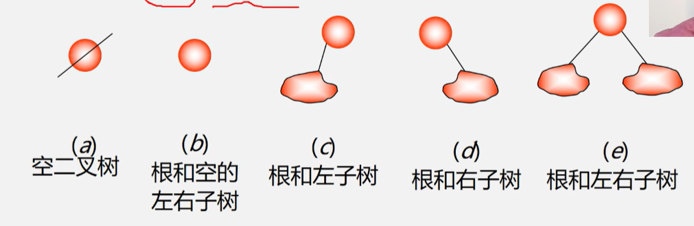

树和二叉树的定义


树的定义
树[Tree]：n(n>=0)个结点的有限集（递归）
- n=0：空树
- n>0:
1. 根[Root]的结点：有且仅有一个特定的
2. 根的子树[SubTree]：其余结点可分为m(m>=0)个互不相交的有限集T1,T2,T3,...,Tm，其中每一个集合本身又是一棵树

树的基本术语

- 有序树：树中结点的各子树从左至右有次序
- 无序树：树中结点的各子树无次序
- 森林：m（m>=0）棵互不相交的树的集合

- 把根结点删除，树->森林[一棵树≈一个特殊的森林]
- 给森林各子树加上一个双亲节点，森林->树
树结构和线性结构的比较
| 线性结构 | 树结构 | ||
|---|---|---|---|
| 第一个数据元素 | 无前驱 | 根结点（只有一个） | 无双亲 |
| 最后一个数据元素 | 无后继 | 叶子结点（可以有多个） | 无孩子 |
| 其他数据元素 | 一个前驱一个后继 | 其他结点—中间结点 | 一个双亲，多个孩子 |
| 一对一 | 一对多 |
二叉树的定义
n（n>=0）个结点的有限集，是空集（n=0）/一个根结点及两棵互不相交的左子树和右子树的二叉树
- 特点： 1. 每个结点最多两个孩子[不存在度>2的结点] 2. 子树有左右之分，次序不能颠倒 3. 二叉树可以是空集合，根可以有空的左/右子树
- 二叉树不是树的特殊情况，他们是两个概念


- 两层、三层


- 二叉树的五种基本形态
